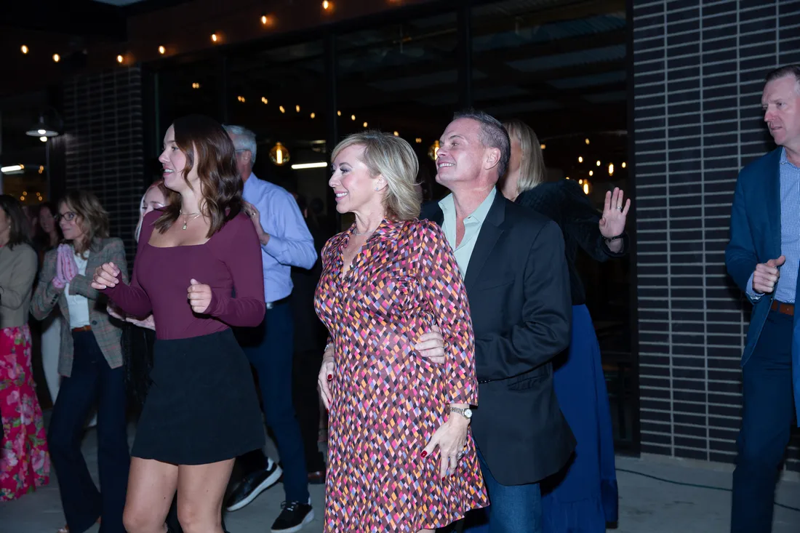
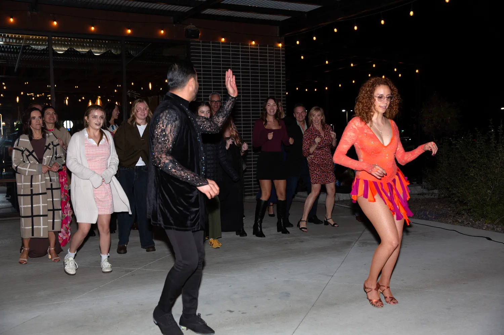

Give
Your gift becomes someone's surgery.
No paid U.S. staff and very low overhead. Almost every dollar goes straight to care in Guatemala.
Where your gift goes
Choose a need
Every gift is processed securely on Givebutter. ALMA is a 501(c)(3) nonprofit, EIN 83-2378971, so your gift is tax-deductible.
Mission fee donation
Give toward volunteers' mission fees, the tax-deductible gifts that make each mission week possible.
GiveMission sponsorship
Underwrite surgeries, supplies and operating room time for a full mission week.
GiveVolunteer sponsorship
Help a nurse, tech or interpreter cover their mission fee so they can serve.
GiveCataract program
Restore a patient's sight. After surgery, our social worker sends you a report and a photo.
GiveDental program
Dental exams and care for children in communities where a dentist is hard to reach.
GiveContinuing Education
Training that strengthens Guatemalan doctors, nurses and staff.
GiveALMA staff in Guatemala
Keeps local coordinators, logistics and year-round follow-up care running.
GiveSchool and Playground Supplies for Escuela Vuelta Grande
School supplies and a playground for the children of Escuela Vuelta Grande.
GiveThe journey of one gift
From your hands to theirs
-
 The wait
The wait A patient waits for surgery
In the highlands, many families are told to wait. Clinics often don't have the surgeons, medicine or instruments to help.
-
 The team
The team Volunteers answer the call
Your gift helps nurses, anesthesia providers and surgeons join Guatemalan teams on each mission, and sponsors volunteers who couldn't otherwise afford to come.
-
 The operating room
The operating room Surgeons work side by side
American and Guatemalan surgeons operate together at Centro Médico Renacer, using supplies and medication your gift provides.
-
 The recovery
The recovery Nurses see patients through
Recovery nurses and Guatemalan staff check on every patient, and local follow-up care continues after the team flies home.
-
 The return home
The return home A family gets their person back
A grandmother who can walk without pain. A father who can work again. A child who can use their hands. That's what your gift does.
Give now
One gift, where it's needed most
Every donation is processed securely through Givebutter. ALMA is a 501(c)(3) nonprofit, EIN 83-2378971, so your gift is tax-deductible.
What a gift can do
$100 helps cover anesthesia medication for one surgery.
Give now on GivebutterThe amounts above are examples of what gifts can cover; ALMA can confirm current costs.
Dance for Guatemala
Bachata for ALMA raised $36,243
Our 2026 fundraiser blew past its $25,000 goal. Thank you, Coeur d'Alene. Watch for the next event.



